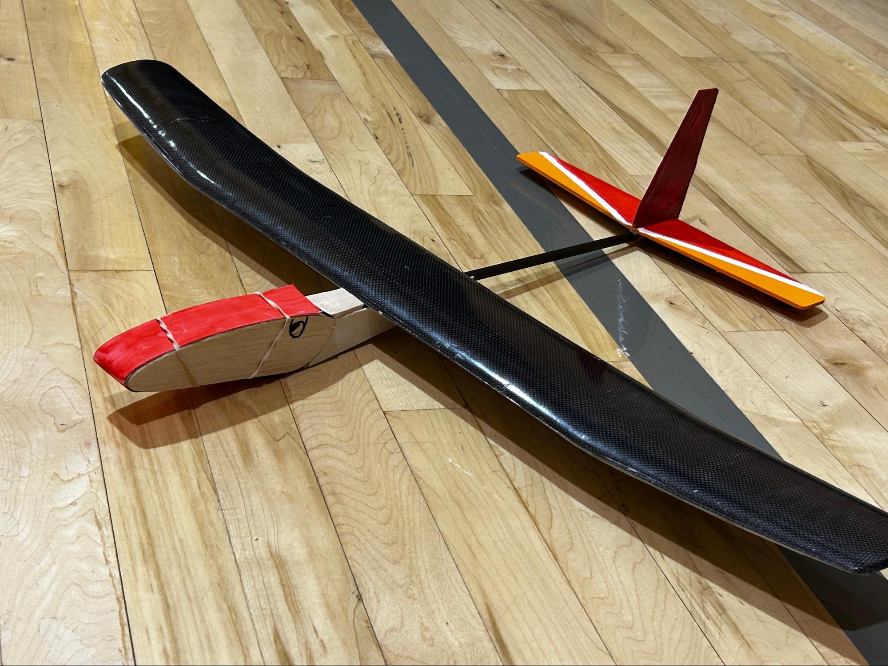
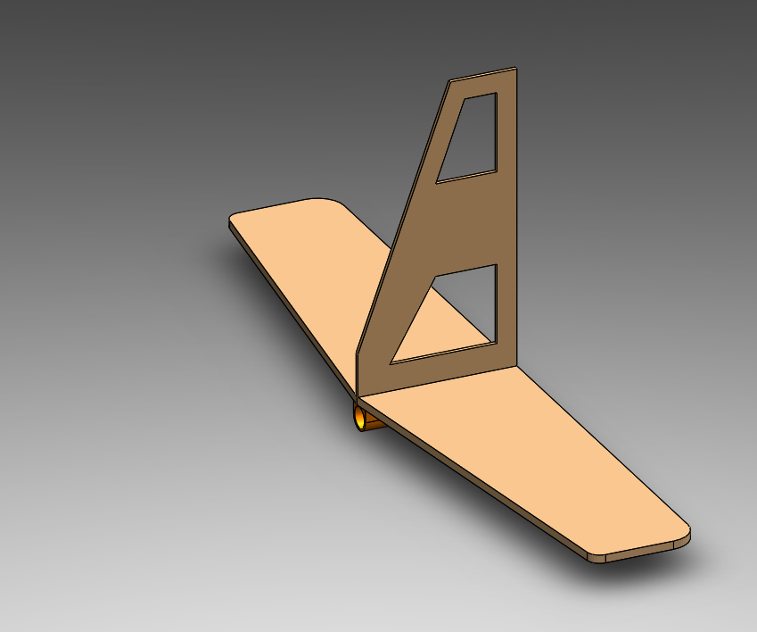
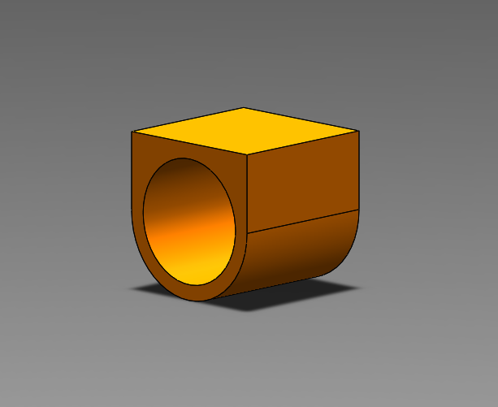
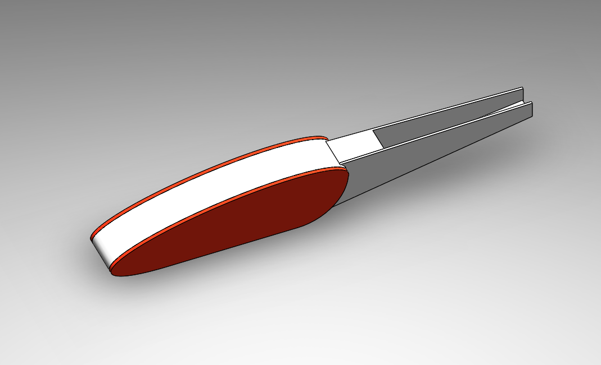
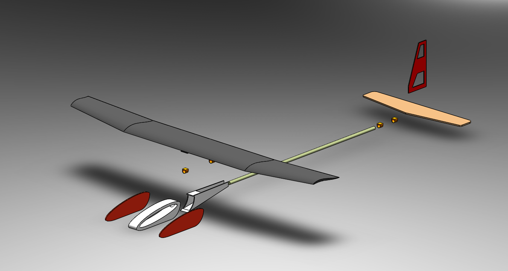
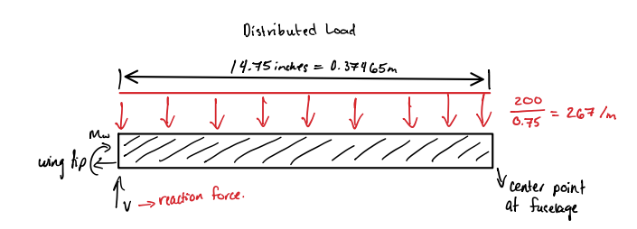
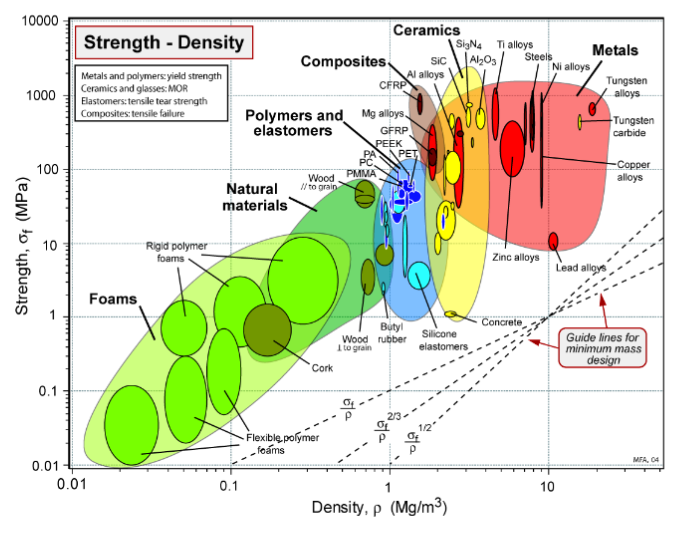
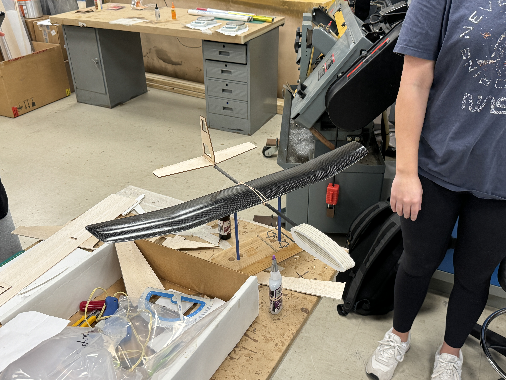
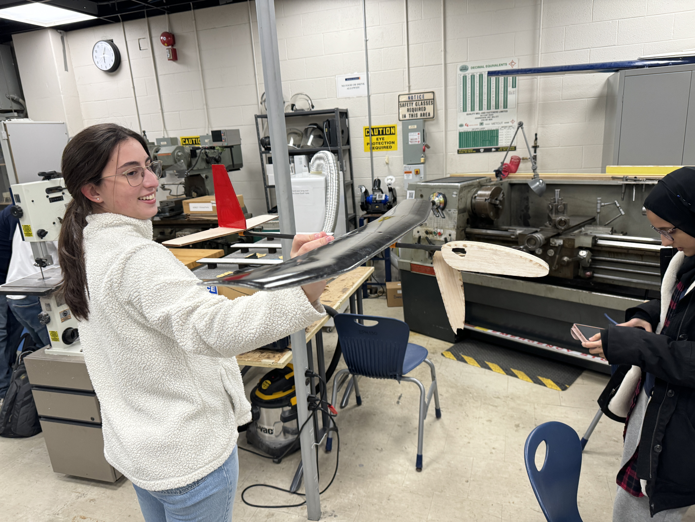
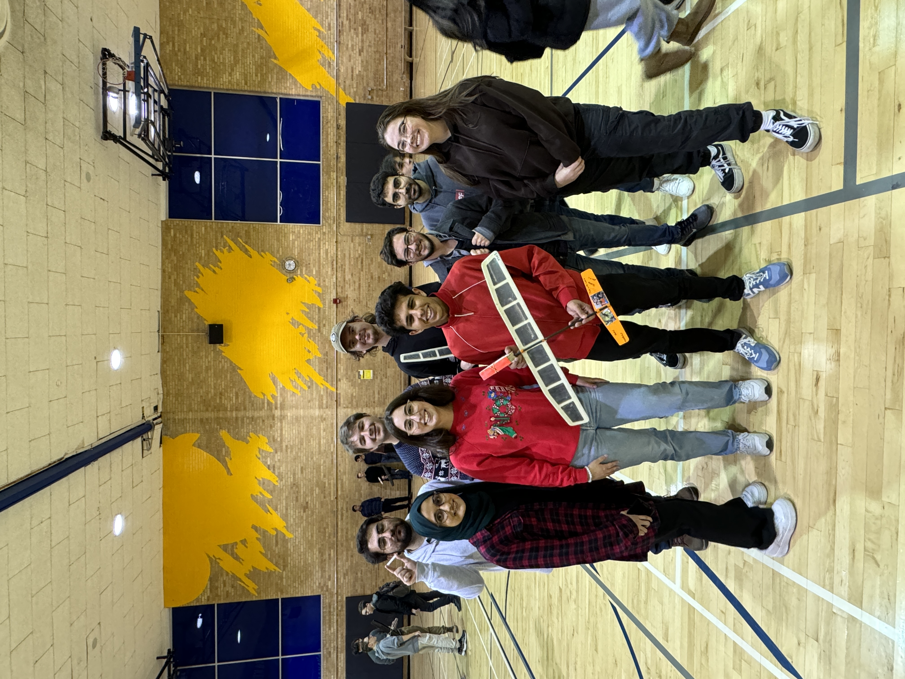

As part of the AER 507: Materials and Manufacturing course, my team designed and built a hand-launched glider using a provided composite wing and custom-designed fuselage, tail, and payload system. The project challenged us to balance strict design constraints — including weight limits under 200 g, tail sizing under 30% of wing area, and fuselage safety requirements — while maximizing flight performance in a gymnasium competition. Our final glider, Quetzalcoatlus, featured a lightweight fuselage with an integrated payload compartment, a conventional tail with lightning-hole cutouts, and a carefully manufactured carbon fiber/fiberglass wing. In competition, the glider achieved a maximum flight distance of 12.8 meters, demonstrating stable flight but also revealing areas for structural improvement.

The glider design process began with evaluating different tail and fuselage configurations against the competition’s weight and size constraints. Using a pairwise comparison chart, our team compared stability, efficiency, durability, and manufacturability across options such as a T-tail and conventional tail. While the T-tail provided some aerodynamic benefits, it was heavier and more complex, so we ultimately
chose a conventional tail to reduce drag and simplify construction. We also incorporated lightning holes into the tail surfaces to save weight without sacrificing stiffness. The fuselage was designed with a rectangular cross-section for ease of fabrication and to provide space for the payload compartment, which was positioned to maintain proper center of gravity for stable flight.




Since the composite wing was a provided component, our focus was on ensuring its aerodynamic efficiency and structural performance fit the glider’s design. We conducted a wing-loading analysis to ensure the glider could achieve stable flight within the gymnasium environment, balancing lift requirements with the strict 200 g weight limit. Using theoretical lift and drag equations, along with assumptions for indoor airspeed, we validated that the carbon fiber/fiberglass layup could handle flight loads with a safety margin. To integrate the wing with the fuselage, we designed a custom 3D-printed wing connector, which not only reduced assembly complexity but also allowed for quick adjustments to angle of attack during testing.


The manufacturing process combined lightweight materials and practical fabrication methods. The fuselage was constructed from laser-cut balsa sheets reinforced with foam, chosen for their balance of strength and low weight. The tail components were cut from balsa wood and assembled with epoxy, with lightning holes carefully placed to reduce unnecessary mass. For the wing, we practiced composite layup techniques with carbon fiber and fiberglass, creating a strong yet lightweight airfoil. During assembly, we relied on adhesives to secure joints while minimizing added weight, and used 3D-printed connectors for both the wing and tail to ensure proper alignment. These steps emphasized precision and consistency, as small misalignments could drastically affect stability and glide performance.


This project reinforced how important it is to combine theoretical analysis with hands-on craftsmanship. On the design side, I learned how to apply aerodynamic principles, material selection trade-offs, and stress analysis to a small-scale but real flying vehicle. During manufacturing, I developed skills in composite layup, laser cutting, and assembly — and experienced firsthand how tolerances, material fragility, and adhesive choices affect performance. On competition day, I learned the value of iteration and resilience: our glider flew smoothly but suffered structural cracks on landing, showing us where we could reinforce the design without compromising weight. Working in a four-person team also reminded me of the importance of dividing tasks clearly, communicating progress, and trusting each other’s technical strengths. Overall, this project strengthened both my technical and teamwork skills while giving me direct experience with the challenges of design-to-build aerospace projects.
